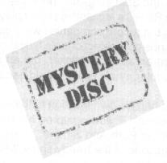
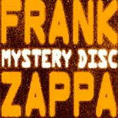

Заппа'zУх!Ой!
русский более или менее регулярный бюллетень для поклонников американского композитора
Frank'а Vincent'а Zappa'ы
Выпуск.12 (25 октября 1998)
Последняя зачистка сусеков
Посвящается Кальвину
Вот что интересно, друзья, коллеги и просто соотечественники, слоняющиеся по сети с целью повышения кпд утомительных служебных занятий, затянутые в пучину страстей, бушующих вокруг нежелания Zappa Family Trust облегчать наши кошельки выпуском архивных записей, мы как-то забыли, что и официально-то изданный на виниле при жизни композитора материал не весь (sic!-) в серебряные цифры сидюков переведен.
Да, прошлогоднее совместное усилие Ryko/MGM, подарившее нам долгожданный двойной компакт 200 Motels (RCD 10513/14), точку в деле перевода звуков маэстро из формата бабушкиной непрерывности в дискретный эпохи Pepsi не поставило, конец файла достигнут не был. Необработанными остались еще семьдесят семь (на самом, деле сорок пять, но об этом позже) минут полноценного, самим Фрэнком Винсентом навитого дорожками спиральными звука.
Причем следы пропавших сокровищ, даже имея под рукой, куда уж надежнее!, дискографию от самого дома Запп найти не так просто. Это потому, что скрывались два Таинственных Диска - Mystery Disc I и Mystery Disc II в подарочных коробочках наборов The Old Masters Box One (Barking Pumpkin BPR-7777) и The Old Masters Box Two (Barking Pumpkin BPR-8888). Тех самых, которые забавно рекламирует (можно сказать, в паузе между серией первой и второй фильма Baby Snakes) тогдашний зав.хозяйством компании FZ Gerry Fialka.
Значит так, в середине восьмидесятых всех магнатов звукозаписывающей индустрии поборов и получив в безраздельное владение мастер-записи своих альбомов, Фрэнк на радостях наштамповал, к тому времени давно исчезнувшие с прилавков магазинов, пластинки Матерей и собственные ранние сольные работы. В 1985 таким образом появилась коробка номер один, семь дисков (альбомы с Freak Out по Cruising With Ruben And The Jets плюс буклет и Mystery Disc I). В 1986 - следующая, номер два, восемь черненьких долгоиграющих (альбомы с Uncle Meat по Just Another Band From L.A. минус буклет, но плюс Mystery Disc II). И завершилась антoлогия в 1987 коробкой номер три, девять старинных новинок (Waka/Jawaka - Zoot Allures, ни тебе таинственного диска, ни книжечки с картинками).
| Вся эта заведомо коллекционная малотиражная роскошь распостранялась только по системе прямых почтовых заказов и поэтому премиальные (bonus) Mystery Disc'и, составленные из строительных неликвидов прорабской деятельности FZ разных Материнских и даже предшествующих им периодов, редкостью стали, само собой разумеется, еще при жизни винила. |
 |
| Mystery Disc 1 (B.P. BPR 7777-6) |
Mystery Disc 2 (B.P. BPR 8888-8) |
|---|---|
|
|
Употребил кое-что, пристроил, но не все, не все, те самые, уже упомянутые, пресловутые сорок пять минут всевозможных музыкальных звуков из восьмидесяти пяти изначальных общих, так и оставались бесхозными, недоступными для меломанов, по разным причинам раритетными коробочками с винилом старых мастеров обделенных.
Не порядок! На который, наконец-то обратили внимание и настойчивые люди из компании РайкоДиск. Уговорили как-то маму Гейл им, верноподданным, ключик выдать от папиных сусеков, поскребли и вот вам колобок!

There is another thing that you can do on piano
if you have one around
if you get tired of playin' whole harmony range by colors...
и даже незабвенная груша Роя Эстрады (Mothers At KPFK)
Wanna-wanna-wannanenema... an enema...
wanna-wanna-wannanenema... an enema
восемь лет спустя все еще вдохновлявшая Фрэнка (см. его рулады под занавес истории о Майкле Кениане - Иллинойском бандите с клизмой).
И все эти чудеса в одном флаконе. Наливай и пей, брат.
Правда, стопроцентного слияния двух LP в один CD, все же, не получилось. Великоваты. Воспроизведение чуточку неполное. Why Don'tcha Do Me Right и Big Leg Emma остались за бортом, то есть, похоже, навеки будут принадлежать только компактной версии альбома Absolutely Free.
Ну, и ладно. Зато для создания уже полного и полнейшего эффекта присутствия прилагается тридцатидвухстраничный буклетик с фотками Карла Францони, Клаудии Кардинале и Гейл Заппа на аэродромном ветру. Книжечка и, вообще, первоклассное оформлениe работы Кальвина Шенкеля, за технологическими подробносятими добро пожаловать на его сайт.
За самой же пластинкой в это трудное время не знаю куда и податься?
Если начнется революция, пока матросы станут потрошить винные склады, можно будет под шумок экспроприировать свою долю Трансильвании, а если же не начнется, то, возможно, подсуетятся пиратствующие братья-славяне. Во всяком случае, сходный по духу и замыслу The Lost Episodes болгар на линялый левак сподобил. Покупать ворованное грех, но можно заделаться инспектором УГРО и нужную пластинку законно изъять на Горбухе.
Ага, заделаться и оставаться, ибо все тот же Кальвин пишет, что заказ на оформление следующего компакта Frank'а Zappa'ы от Райко уже поступил и находится в работе.
Иными словами, похоже, покончив на мажорной ноте Таинственного Диска с порядком уже всем надоевшим переливанием из винила в алюминий, семья наконец-то решила выпустить и кое-что из архивов. Так что, учитесь составлять милицейские протоколы, меломаны, товарищи по несчастью.
Искренне Ваш, Владимир Советов
http://www.arf.ru/
| Домой | Заппа'zУх!Ой! | Поиск | Хозяин |